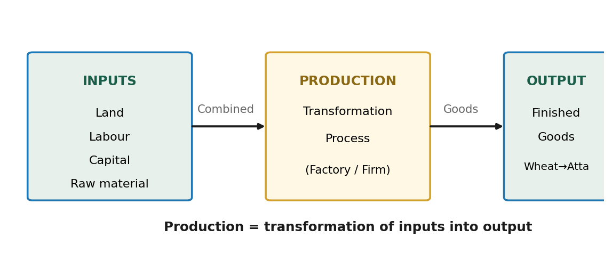
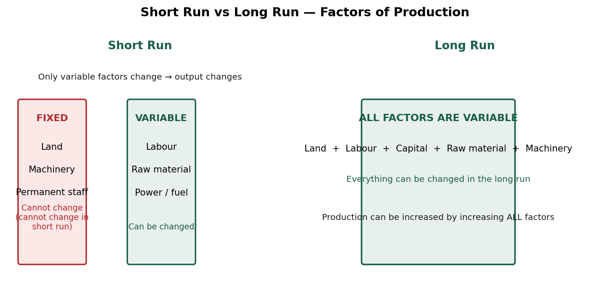
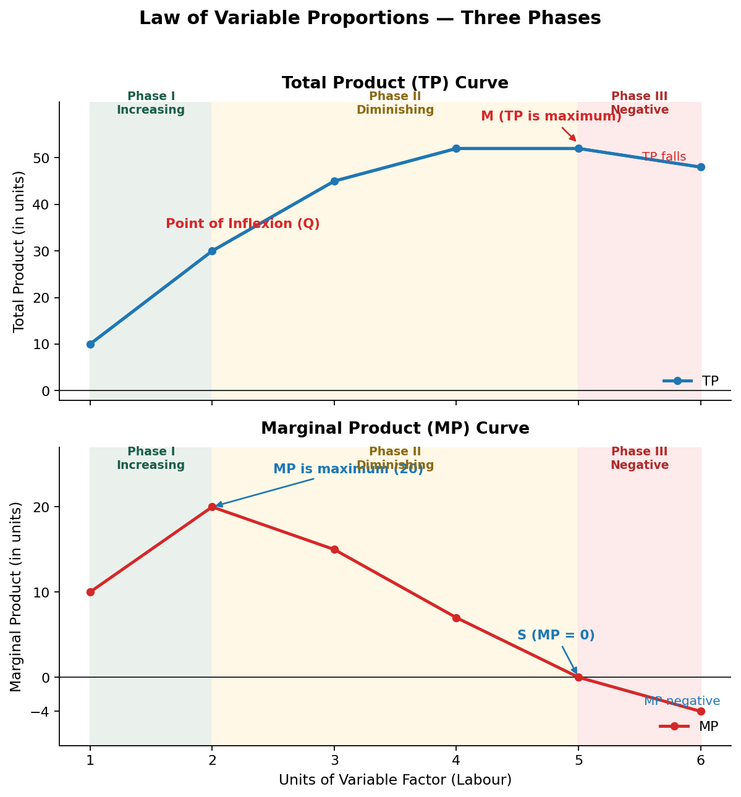
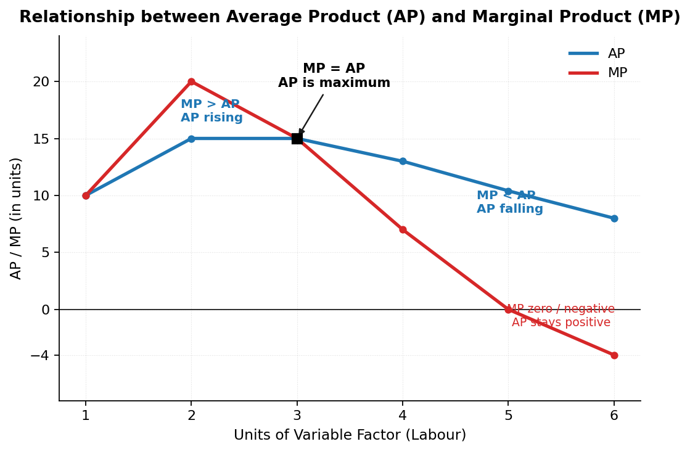
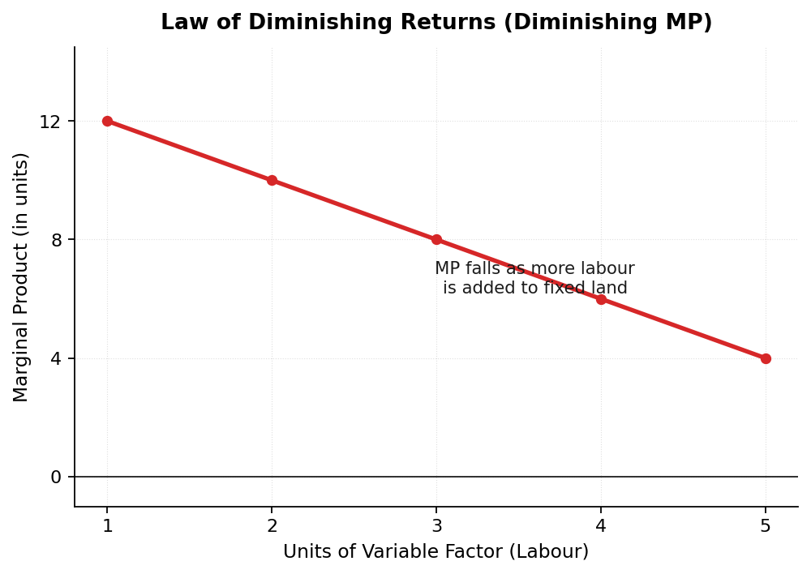

Chapter 5
Production Function
Ab consumer se producer ki taraf — inputs ka output mein transformation, aur Law of Variable Proportions ka pura game plan.
1. Introduction — What is Production?
The Big Idea:
Ab tak hum consumer (kharidne wala) ki taraf se padha hai — Demand, Utility, Elasticity. Ab hum producer (banane wala) ki taraf badhenge.
Production refers to the transformation of inputs into output — raw material ko finished goods mein convert karna.
Simple Example (From Lecture):
| Input (Raw Material) | Production Process | Output (Finished Good) |
|---|---|---|
| Wheat (गेहूँ) | Milling / Grinding | Atta (आटा) |
| Sugar cane (गन्ना) | Crushing & refining | Sugar (चीनी) |
| Steel (स्टील) | Manufacturing | Cars (गाड़ियाँ) |
Flow Diagram of Production:

Key Point: Production = Inputs + Transformation Process → Output
Inputs are Land, Labour, Capital, Raw material and Output is the Finished Good.
2. Production Function
Definition:
Production Function is an expression of the technological relation between physical inputs and output of a good.
Formula:
Qx = f (i1, i2, i3, ..... in) Where: Qx = Quantity of output of Good X f = Function (relationship) i1, i2, i3 = Inputs (Land, Labour, Capital, Raw material)
Production Function vs Demand Function (Memory Trick):
| Function | Who? | Shows Relation Between |
|---|---|---|
| Demand Function Dx = f(P, Pr, Y, T, E) | Consumer | Demand & its determinants |
| Production Function Qx = f(L, K, ...) | Producer | Output & inputs |
Lecture Tip: Jis tarah demand function consumer ka tha, usi tarah production function producer ka hai. Yahan input badhao → output badhta hai, par law ke mutabik hamesha nahi!
3. Short Run & Long Run
Short Run:
Short Run refers to a period in which output can be changed by changing only variable factors (labour, raw material). Fixed factors (land, machinery) cannot be changed.
Long Run:
Long Run refers to a period in which output can be changed by changing all factors of production. Every factor is variable in the long run.
Example (From Lecture):
T-Shirt factory: Short run mein sirf labour + raw material badha ke production 250 se 500 T-shirts kar sakte ho. Par machinery ya building nahi badal sakte.
Long run mein sab kuch badal sakte ho — machinery, land, building, sab!

Difference Between Short Run & Long Run:
| Basis | Short Run | Long Run |
|---|---|---|
| Meaning | Output changes by changing only variable factors | Output changes by changing all factors |
| Classification of factors | Factors are classified as variable and fixed | All factors are variable |
| Price determination | Demand is more active — supply cannot be increased immediately | Both demand and supply play equal role — both can be increased |
4. Variable Factors & Fixed Factors
Definitions:
Variable Factors refer to those factors which can be changed in the short run.
Fixed Factors refer to those factors which cannot be changed in the short run.
Examples:
| Variable Factors | Fixed Factors |
|---|---|
| Labour (casual) | Land |
| Raw material | Building |
| Power / Fuel | Plant & Machinery |
| Permanent staff |
Difference Between Variable & Fixed Factors:
| Basis | Variable Factors | Fixed Factors |
|---|---|---|
| Meaning | Can be changed in the short run | Cannot be changed in the short run |
| Relation with output | Vary directly with output | Do not vary directly with output |
| Example | Raw materials, casual labour, power, fuel | Building, plant & machinery, permanent staff |
Exam Point: Variable factors change ke saath output badhta hai (proportion mein). Fixed factors hamesha same rehte hain — chahe output 0 ho ya maximum!
5. Concept of Product — TP, AP, MP
Product or Output refers to the volume of goods produced by a firm or an industry during a specified period of time.
There are three concepts of product:
A) Total Product (TP)
Total Product refers to the total quantity of goods produced by a firm during a given period of time with given number of inputs.
TP = AP × Units of Variable Factor
B) Average Product (AP)
Average Product refers to output per unit of variable input.
AP = TP / Units of Variable Factor
C) Marginal Product (MP)
Marginal Product refers to the addition to total product when one more unit of variable factor is employed.
MP = TPn − TPn−1 Where: MPn = Marginal Product of nth unit of variable factor TPn = Total Product of n units of variable factor TPn−1 = Total Product of (n−1) units of variable factor n = Number of units of variable factor
Quick Memory Trick:
| Concept | Meaning | Formula |
|---|---|---|
| TP | Total quantity produced | TP = AP × n |
| AP | Output per unit of input | AP = TP ÷ n |
| MP | Extra output from one more unit | MP = TPn − TPn−1 |
6. Numericals (From Lecture)
Question 1: Calculate AP and MP
| Variable Factor (units) | TP (units) | MP (units) | AP (units) |
|---|---|---|---|
| 1 | 8 | 8 | 8 |
| 2 | 16 | 8 | 8 |
| 3 | 24 | 8 | 8 |
| 4 | 24 | 0 | 6 |
| 5 | 29 | 5 | 5.8 |
| 6 | 25 | −4 | 4.17 |
Question 2: Calculate TP and AP from MP
| Variable Factor (units) | MP (units) | TP (units) | AP (units) |
|---|---|---|---|
| 1 | 10 | 10 | 10 |
| 2 | 12 | 22 | 11 |
| 3 | 14 | 36 | 12 |
| 4 | 12 | 48 | 12 |
| 5 | 7 | 55 | 11 |
| 6 | 5 | 60 | 10 |
Question 3: Find the missing values
| Variable Factor (units) | TP (units) | AP (units) | MP (units) |
|---|---|---|---|
| 0 | 0 | — | — |
| 1 | 4 | 4 | 4 |
| 2 | 10 | 5 | 6 |
| 3 | 18 | 6 | 8 |
| 4 | 24 | 6 | 6 |
| 5 | 25 | 5 | 1 |
How to Solve: TP = Sum of MPs, AP = TP ÷ n, MP = TPn − TPn−1. Ek value doosri se nikal sakte ho — flow chart memory!
7. Law of Variable Proportions (LVP)
Also Called:
- Law of Variable Proportions
- Law of Diminishing Returns (partially)
- Returns to a Factor (short run)
Statement:
Law of Variable Proportions (LVP) states that as we increase the quantity of only one input keeping other inputs fixed, total product (TP) initially increases at an increasing rate, then at a decreasing rate, and finally at a negative rate.
Assumptions of LVP:
- Fixed Technology — Technology remains constant during production
- Variable Input — Only one input is variable, others remain fixed
- Short Run — At least one factor is fixed
- Homogeneous Input — All units of the variable factor are identical
- Divisible Inputs — Inputs can be divided into smaller units
The Three Phases (Schedule):
| Fixed Factor (Land in acres) | Variable Factor (Labour) | TP (units) | MP (units) | Phase |
|---|---|---|---|---|
| 1 | 1 | 10 | 10 | Phase I: Increasing Returns |
| 1 | 2 | 30 | 20 | Phase I: Increasing Returns |
| 1 | 3 | 45 | 15 | Phase II: Diminishing Returns |
| 1 | 4 | 52 | 7 | Phase II: Diminishing Returns |
| 1 | 5 | 52 | 0 | Phase II ends (MP = 0) |
| 1 | 6 | 48 | −4 | Phase III: Negative Returns |
The Three Phases Explained:
Phase I (Between O to Q): TP increases at an increasing rate and MP also increases. (MP maximum yahan aata hai)
Phase II (Between Q to M): TP increases at a decreasing rate and MP falls but remains positive. This phase ends when MP becomes zero and TP reaches its maximum.
Phase III (Beyond point M): TP starts decreasing and MP not only falls but becomes negative.
Diagram — TP & MP Curves:

Point of Inflexion:
Point 'Q' is known as the Point of Inflexion because the curvature of the TP curve changes at this point — TP increases at increasing rate se decreasing rate pe shift ho jaata hai.
Quick Summary Table:
| Phase | TP Behaviour | MP Behaviour | MP Sign |
|---|---|---|---|
| I — Increasing Returns | Increases at increasing rate | Increases (up to maximum) | Positive |
| II — Diminishing Returns | Increases at decreasing rate | Falls but stays positive | Positive (till 0) |
| III — Negative Returns | Starts falling | Falls and becomes negative | Negative |
8. Reasons for the Three Phases
Reasons for Increasing Returns (Phase I):
- Better Utilisation of the Fixed Factor — Fixed factor initially kam hai, isliye use better use karte hain
- Increased Efficiency of Variable Factor — Division of labour se skill improve hoti hai
- Indivisibility of Fixed Factor — Fixed factors (machinery) ko smaller units mein todna possible nahi, isliye initially output zyada badhta hai
Reasons for Diminishing Returns (Phase II):
- Optimum Combination of Factors — Ek best combination hota hai jahan TP maximum hota hai; uske baad MP girna shuru hota hai
- Over-utilisation of Fixed Factor — Fixed factor pe pressure badh jaata hai
- Imperfect Substitutes — Factors of production ek doosre ke perfect substitutes nahi hain
Reasons for Negative Returns (Phase III):
- Limitation of Fixed Factors — Fixed factors ka capacity khatam ho jaata hai
- Poor Coordination — Variable aur fixed factors ke beech coordination toot jaati hai
- Decrease in Efficiency of Variable Factor — Labour ki efficiency negative ho jaati hai
9. Relationship between TP & MP
Rules:
1. As long as TP increases at an increasing rate, MP also increases.
2. When TP increases at a diminishing rate, MP decreases (but remains positive).
3. When TP reaches its maximum point, MP becomes zero.
4. When TP starts decreasing, MP becomes negative.
Relationship Table:
| TP Behaviour | MP Behaviour |
|---|---|
| TP ↑ at increasing rate | MP ↑ |
| TP ↑ at diminishing rate | MP ↓ (but positive) |
| TP at maximum | MP = 0 |
| TP ↓ | MP negative |
Lecture Memory Trick: TP ko gaadi maano, MP ko accelerator. Jab tak accelerator press hota hai (positive MP), gaadi (TP) aage badhti hai. Accelerator zero → gaadi ruk jaati hai (TP maximum). Accelerator negative → gaadi pichhe jaati hai (TP falls)!
10. Relationship between AP & MP
Rules:
1. As long as MP is more than AP, AP rises.
2. When MP is equal to AP, AP is at its maximum.
3. When MP is less than AP, AP falls.
4. Thereafter, both AP and MP fall, but MP becomes negative whereas AP remains positive.
5. MP falls at a faster rate in comparison to the fall in AP.
Diagram — AP & MP Curves:

Relationship Table:
| Condition | Effect on AP |
|---|---|
| MP > AP | AP rises |
| MP = AP | AP is maximum (MP curve cuts AP curve) |
| MP < AP | AP falls |
| MP zero / negative | AP stays positive |
Exam Point: MP curve cuts AP curve at its maximum point — kyunki AP tabhi max hota hai jab MP = AP.
11. Law of Diminishing Returns
Statement:
Law of Diminishing Returns states that when more and more units of a variable factor are employed with a fixed factor, then the marginal product of the variable factor must fall.
Also Known As:
- Law of Diminishing Marginal Product
Important Points:
- This law considers only the falling phases of MP and ignores the phase of increasing MP.
- It works in the short run — firm can change output by changing variable factors only.
Schedule:
| Fixed Factor (Land in acres) | Variable Factor (Labour) | TP (units) | MP (units) |
|---|---|---|---|
| 1 | 1 | 12 | 12 |
| 1 | 2 | 22 | 10 |
| 1 | 3 | 30 | 8 |
| 1 | 4 | 36 | 6 |
| 1 | 5 | 40 | 4 |
Diagram:

Note: LVP ke Phase II aur III mein bhi MP girti hai, par Law of Diminishing Returns only MP ke falling part ko hi manta hai. Isliye ise LVP ka extension nahi kehte — LVP iska extension hai!
12. MCQs (From Lecture)
-
Which of the following statements accurately describe the relationship between AP and MP?
- (a) AP rises when MP is above it and falls when MP is below it ✔
- (b) AP and MP are always parallel to each other
- (c) MP intersects AP at its minimum point
- (d) AP is always rising when MP is falling and vice-versa
-
When MP is zero, what can you say about TP?
- (a) TP is increasing
- (b) TP is maximum ✔
- (c) TP is falling
- (d) None of the above
-
Marginal Product refers to addition to total output when one more:
- (a) Unit is produced
- (b) Unit is sold
- (c) Unit is consumed
- (d) Unit of variable factor is employed ✔
-
The period of time in which the plant capacity can be varied is known as:
- (a) Short run
- (b) Long run ✔
- (c) Both (a) and (b)
- (d) Neither (a) nor (b)
-
The maximum possible output for a firm with two units of labour (L) and ten units of capital (K), if its production function is given as: 5L + 2K
- (a) 0 units
- (b) 30 units ✔
- (c) 200 units
- (d) 50 units
Solution: Q = 5L + 2K = 5(2) + 2(10) = 10 + 20 = 30 units
-
According to Law of Variable Proportions, there are ___ phases.
- (a) 1
- (b) 3 ✔
- (c) 2
- (d) 4
-
A rational producer always aims to operate in ___ of Law of Variable Proportions.
- (a) 1st Phase (Increasing returns to a factor)
- (b) 2nd Phase (Diminishing returns to a factor) ✔
- (c) 3rd Phase (Negative returns to a factor)
- (d) Either 1st Phase or 2nd Phase
-
Both AP and MP curves are generally:
- (a) U-shaped
- (b) Inversely U-shaped ✔
- (c) Rising
- (d) Falling
-
Which of the following is correct statement showing the relationship between AP and MP?
- (a) When MP > AP, AP increases
- (b) When MP = AP, AP is constant
- (c) When MP < AP, AP falls
- (d) All of these ✔
-
When marginal product rises, total product:
- (a) Falls
- (b) Rises ✔
- (c) Can rise or can fall
- (d) Remains constant
-
The average product curve in the input-output plane will be:
- (a) An 'S' shaped curve
- (b) An inverse 'S' shaped curve
- (c) A 'U' shaped curve
- (d) An inverse 'U' shaped curve ✔
-
Assertion (A): Variable Factors can be changed in the short run.
Reason (R): Variable Factors are not required in case of zero output.- (a) Both (A) and (R) are True and (R) is the correct explanation of (A)
- (b) Both (A) and (R) are True and (R) is not the correct explanation of (A) ✔
- (c) (A) is True but (R) is False
- (d) (A) is False but (R) is True
-
Assertion (A): In the long run, production is done only by using the variable factors.
Reason (R): All factors are variable in the long run.- (a) Both (A) and (R) are True and (R) is the correct explanation of (A) ✔
- (b) Both (A) and (R) are True and (R) is not the correct explanation of (A)
- (c) (A) is True but (R) is False
- (d) (A) is False but (R) is True
-
Statement 1: Law of Variable Proportions is an extension to Law of Diminishing Returns.
Statement 2: Law of Diminishing Returns considers only the rising phases of MP and ignores the phase of falling MP.- (a) Both the statements are true
- (b) Both the statements are false
- (c) Statement 1 is true and Statement 2 is false ✔
- (d) Statement 2 is true and Statement 1 is false
13. Questions & Answers (From Lecture)
Q1. Do you agree with the view that TP increases even when MP is decreasing?
Yes, TP increases even when MP is decreasing, because MP is an addition to TP. Jab MP decreasing hota hai, to sirf addition to TP kam ho raha hai — matlab TP increasing rate par badhna band karke diminishing rate par badhta hai. TP tabhi girna shuru hota hai jab MP negative ho jaata hai.
Q2. Explain the relationship between AP and MP.
(i) AP increases when MP is greater than AP.
(ii) AP is maximum when both MP and AP are equal.
(iii) AP decreases when MP is less than AP.
(iv) AP continues to be positive even when MP is zero or negative.
(v) AP may rise even when MP falls but lies above AP.
Q3. Production of gift packs one week before Diwali falls in which period?
Short period — kyunki Diwali ka season sirf ek hafte ka hota hai. Is time mein only variable factors (material, labour) badha sakte hain. Fixed factors like plant & machinery nahi badal sakte. Isliye yeh short period hai.
Q4. "Average product can never be zero while marginal product can be." Comment.
MP zero ho sakta hai jab production mein koi addition na ho (TP constant). Par AP kabhi zero nahi ho sakta kyunki AP = TP ÷ n — aur na TP zero hai na variable units zero. Dono positive hain, isliye AP hamesha positive rahega.
Q5. What is meant by returns to a factor? State the law of diminishing returns to a factor.
Returns to a Factor: Behaviour of output when only one variable factor is increased in the short run and fixed factors remain constant.
Law of Diminishing Returns to a Factor: Total output increases at a diminishing rate when more and more variable factor is combined with the fixed factor — marginal product of the variable factor must diminish.
Q6. What is the law of diminishing marginal product?
The law of diminishing marginal product states that the marginal product first increases, reaches its maximum and eventually falls when more and more units of a variable factor are applied to a given quantity of fixed factors.
Q7. Complete the following data:
| Units of Labour | TP (units) (AP × L) | AP (units) (TP/L) | MP (units) (TPn − TPn−1) |
|---|---|---|---|
| 1 | 8 | 8 | 8 |
| 2 | 20 | 10 | 12 |
| 3 | 30 | 10 | 10 |
| 4 | 36 | 9 | 6 |
| 5 | 40 | 8 | 4 |
| 6 | 42 | 7 | 2 |
Q8. From the following information about a firm, calculate average product and marginal product.
| Units of Labour (L) | Total Product (TP) | Average Product (TP/L) | Marginal Product (TPn − TPn−1) |
|---|---|---|---|
| 10 | 100 | 10 | — |
| 20 | 220 | 11 | 120 |
| 30 | 360 | 12 | 140 |
| 40 | 460 | 11.5 | 100 |
| 50 | 500 | 10 | 40 |
Q9. What is short run?
Short run refers to a period in which output can be changed by changing only variable factors.
Q10. What is long run?
Long run refers to a period in which output can be changed by changing all the factors of production.
Q11. In which period, some factors of production are fixed and others variable?
Short run.
Q12. What type of changes take place in TP and MP when there are (a) increasing returns to a factor, (b) diminishing returns to a factor? Why do these changes take place?
(a) Increasing returns: TP increases at an increasing rate and MP also rises. Reasons:
1. Better utilisation of the fixed factor
2. Increased efficiency of variable factor
(b) Diminishing returns: TP increases at a decreasing rate and MP starts declining. This phase ends when MP is zero and TP is maximum. Reasons:
1. Beyond the optimum combination of factors, MP begins to fall
2. Factors of production are imperfect substitutes of each other
Q13. Why does MP curve cut AP curve at its maximum point?
Jab AP rises hota hai, MP > AP. Jab AP falls hota hai, MP < AP. Isliye AP sirf tab constant/maximum hota hai jab MP = AP. Isliye MP curve AP curve ko uske maximum point par cut karti hai.
Q14. State the behaviour of marginal product in the Law of Variable Proportions. Explain the causes of this behaviour.
MP rises: Variable input badhane se fixed inputs ka efficient utilisation hota hai (specialisation), jisse variable input ki efficiency badhti hai.
MP falls but is positive: Ek point ke baad zyada variable input fixed inputs pe pressure daalta hai.
MP continues to fall and is negative: Itna zyada pressure ki total product hi girna shuru ho jaata hai.
Q15. What are the different phases in the Law of Variable Proportions in terms of Total Product? Give reasons behind each phase. Use diagram.
Phase I: TP rises at increasing rate (upto point A)
Phase II: TP rises at decreasing rate (between A and B)
Phase III: TP falls (after point B)
Reasons:
- Phase I: Initially variable input fixed input ke comparison mein bahut kam hai. Production shuru hote hi fixed inputs ka efficient use hota hai aur division of labour se productivity badhti hai.
- Phase II: Optimum combination ke baad fixed factors over-utilised ho jaate hain.
- Phase III: Variable input ka pressure itna zyada ki TP girna shuru ho jaata hai.
Diagram Tip: Diagram ke liye TP_MP_Curves.png use karo — TP curve par Phase I (upto point of inflexion Q), Phase II (Q se M tak, TP maximum) aur Phase III (M ke baad TP falling) clearly dikhta hai.
14. Key Terms Glossary
Production
Transformation of inputs into output
Production Function
Technological relation between physical inputs and output
Short Run
Output changes by changing only variable factors
Long Run
Output changes by changing all factors
Variable Factors
Can be changed in the short run (labour, raw material)
Fixed Factors
Cannot be changed in the short run (land, machinery)
Total Product (TP)
Total quantity of goods produced with given inputs
Average Product (AP)
Output per unit of variable input (TP ÷ n)
Marginal Product (MP)
Addition to TP when one more unit of variable factor is employed
Law of Variable Proportions
TP increases at increasing rate → decreasing rate → negative rate
Point of Inflexion
Point where curvature of TP curve changes (Phase I → II)
Law of Diminishing Returns
MP of variable factor must fall when more units are employed with fixed factor